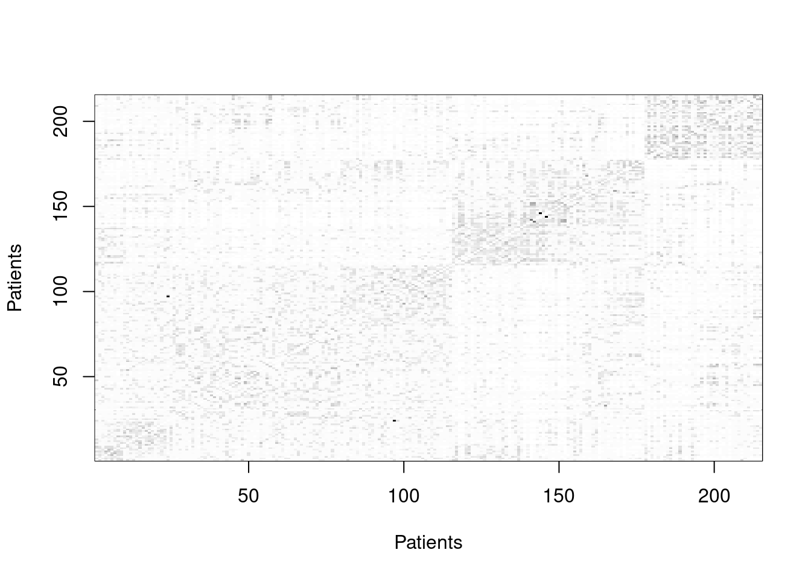
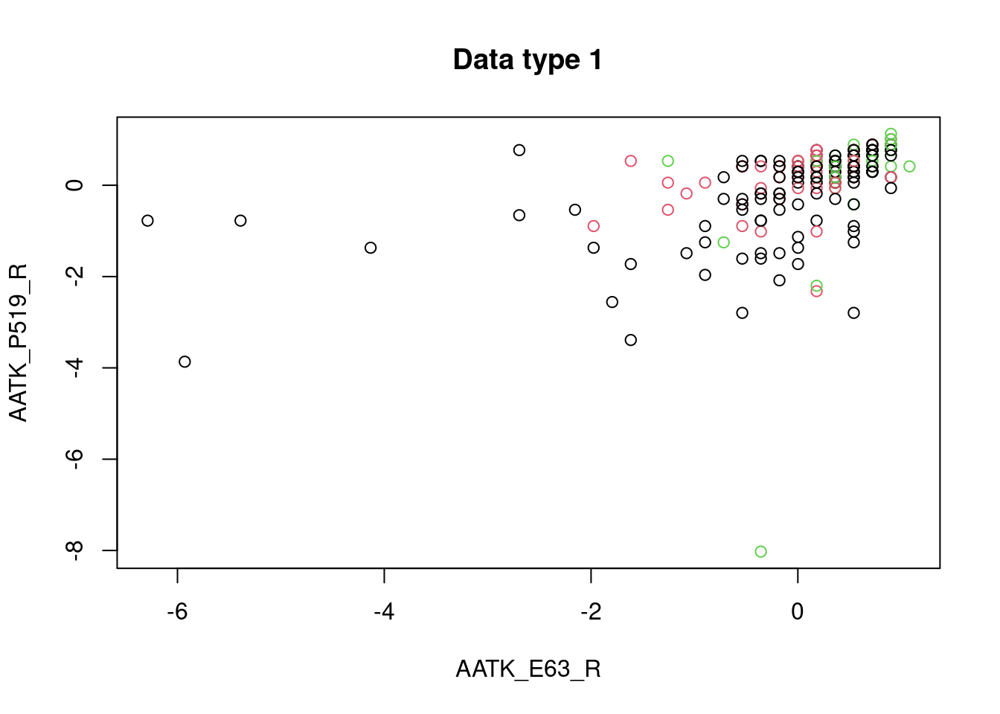
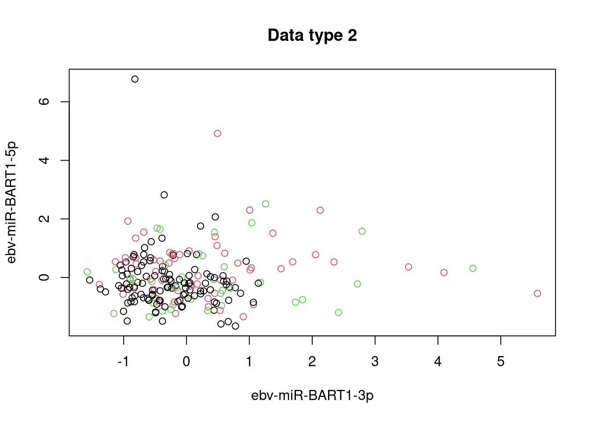

library(SNFtool)
library(data.table)
# importing data ----------------------------------------------------------
data_path <- "lab-data/abcd/processed/prashanth-proj/baseline-chronic-mtbi/"
# patient_ids
patient_id_path <- paste0(data_path, "patient_ids.csv")
patient_ids <- read.csv(patient_id_path,
header = F,
fileEncoding="UTF-8-BOM")
class(patient_ids)[1] "data.frame"# data files have empty last column, which can be dealt with fill=T followed
# by removing the empty last column
methy_expression <- fread(paste0(data_path, "GLIO_Methy_Expression.txt"),
fill=T)
mirna_expression <- fread(paste0(data_path, "GLIO_Mirna_Expression.txt"),
fill=T)
methy_expression <- methy_expression[ , 1:(ncol(methy_expression) - 1)]
mirna_expression <- mirna_expression[ , 1:(ncol(mirna_expression) - 1)]
colnames(methy_expression)[2:ncol(methy_expression)] <- patient_ids[,1]
colnames(mirna_expression)[2:ncol(mirna_expression)] <- patient_ids[,1]
methy_expression <- t(as.matrix(methy_expression, rownames = 1))
mirna_expression <- t(as.matrix(mirna_expression, rownames = 1))
# snftool tutorial --------------------------------------------------------
# https://rdrr.io/cran/SNFtool/man/SNF.html
# initial parameters
k <- 20 # number of neighbours
alpha <- 0.5 # hyperparameter
iterations <- 20
# pair-wise distance calculations - this uses a lot of ram
methy_distances <- (dist2(methy_expression, methy_expression))^(1/2)
mirna_distances <- (dist2(mirna_expression, mirna_expression))^(1/2)
# construct similarity graphs (W matrices)
methy_similarity_graph <- affinityMatrix(methy_distances, k, alpha)
mirna_similarity_graph <- affinityMatrix(mirna_distances, k, alpha)
# construct fused graph
fused_graph <- SNF(list(methy_similarity_graph,
mirna_similarity_graph),
k, iterations)
# display clusters
C <- 3
group <- spectralClustering(fused_graph, C)
displayClusters(fused_graph, group)
labels = spectralClustering(fused_graph, C)
plot(methy_expression, col=labels, main='Data type 1')
plot(mirna_expression, col=labels, main='Data type 2')